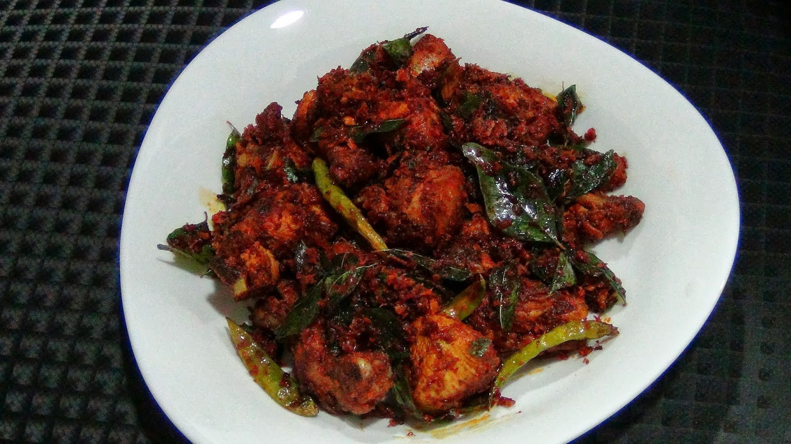

Chicken-chily:-

Description
Cooking Time:-
Preperation Time: 45 Min Cook Time: 20 Min Total Time: 15 Min
Ingrediants:-
ients
Serves : 4
1/2 kgs to marinate:boneless chicken thighs or breast
1 tsp minced garlic
1 tsp minced ginger
1/4 tsp turmeric powder
3 tsp coriander powder
1 tsp freshly grounded black pepper
1 1/2 tsp red chili powder
1 pinch garam masala
1/4 tsp cumin powder
1/2 tsp kashmiri chilli powder
1 nos egg-beaten
3 tbsp lemon juice
2 tbsp corn flour
2-3 drop red food color(optional)
1 tsp salt to taste
2-3 cups oil-for deep frying
1/4 tsp to temper: cumin seeds
1/2 inch ginger,finely,chopped
3 nos garlic,finely,chopped
1 sprig curry leaves
2 nos green chili(slit,lengthwise)
Directions
Tender Chicken is preferred,cut chicken into small bite size piece.
Marinate Chicken with all ingredients except oil and leave it in the fridge for 2 hours or overnight in the refrigerator.
Heat oil in a non stick pan,add on marinated chicken pieces in batches and deep fry it.
it would take about 5-8 minutes to cook each batch.Make sure meat if evenly cooked.
Over cooking is not recommended but cook it until they are juicy and moist.Drain them in kitchen towel and keep it aside.
In another pan add cumin seeds and dry them for a while to release the aroma and then add chopped garlic,ginger ,chopped chilies and curry leaves.
Fry everything stirring for about 2 minutes.and Add on the fried chicken pieces to it and Toss well.
Serve with raw onion slices and lemon wedges as a starter or with breads.